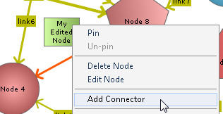
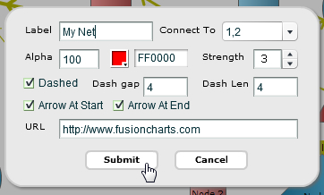
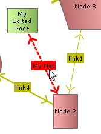

You can interactively add connectors between two nodes. To avail this feature you need to render the chart in edit mode » Edit mode can be enabled setting viewMode='0' in <chart> element. You can also edit existing connector lines or delete them if required. In this page we will see how these can be achieved.
For this, let's take the basic chart that we have created in the previous page that has a new node in it.

Adding a connector at run-time
After creating more than one rows, the user can now connect this node to other nodes by using the "Add Connector" from the context menu of the new node.

This pops up a dialog box, as shown below, requesting the following information:
- Label of the connector
- Strength of the connector. Strength represents a numeric value between 0 and 2 to help you define various thickness for different connectors. The strength value gets multiplied by stdThickness parameter to render the thickness of line
- "Connect to" refers to the node with which this node is to be connected
- Color and alpha sets the color and transparency level of the connector lines
- Whether to show the connector as dashed? If chosen, two more settings - Dash gap and Dash length shows up for more customization
- Whether to include arrows at the start and end of the connector line?
- You can add a hyper-link to the connector through "URL". This allows you to set an URL or JavaScript function

The connector would then be visible as under:

You can define connectors in chart data too. Each connector line is defined in the data of the chart through <connector> element of <connectors> element.
In edit mode, the end user can edit an existing connector line which is either created using the data provided to the chart while rendering/updating or created at run-time.
To edit a connector, right click on the connector and select"'Edit Connector" option from the context menu.

This again present a dialog box with all major configurable options for the connector. Change settings as per the requirement.

The connector will get updated with new configurations after Submit is clicked.

Using the Edit dialog box you can not edit the "Connect To" setting.
Deleting a connector at run-time
In edit mode, the user can also selectively delete connectors between any two nodes by right clicking on connector and then selecting "Delete Connector".

Deleted connector:

You can get the latest updated node positions using JavaScript or by submitting the updated positions to a server side script.